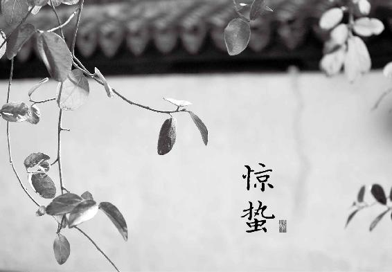

惊蛰，每年的3月5日或6日交惊蛰节气。此时冬天蛰伏的动物和虫子都出洞了，病毒也开始活跃起来。风热感冒、发烧、咳嗽等流行病在这个时节更是很容易找上我们。
惊蛰时节，要善吃萝卜、黄豆等物来提高身体的抵抗力。
“一鼓轻雷惊蛰后，细筛微雨落梅天。”我很喜欢宋人的这两句诗。古人写惊蛰，必写雷。雷为云与云之间阴阳电荷摩擦所产生。当地气开始回暖，地表的水蒸气大量蒸发，形成很多的云，于是“雷始鸣”。古人听到春雷就知道，地气活了，要开始忙春耕农事了。
每年的3月5日或6日交惊蛰节气，开始春天的第二个月。此时，冬天蛰伏的动物和虫子都出洞了。我们也不应该窝在家里，该多出门活动活动。动则生阳，春天一定要多运动，才能更好地振奋身体的阳气。
惊蛰时，病毒也开始活跃起来。近几年让大家闻之色变的禽流感，都是在此季集中爆发。风热感冒、发烧、咳嗽在这个时节更是很容易找上我们，特别是人群密集的办公室和学校。
如果发现自己或家里的老人、孩子开始轻微干咳，不要掉以轻心，马上吃几片生的白萝卜。最好是细细地嚼碎了，慢慢地咽下去。没有白萝卜，也可以用青萝卜、红萝卜或是心里美萝卜，但不要用胡萝卜。生吃萝卜可以刺激人体产生 “干扰素”，对抗呼吸道病毒很有效。记得一感觉到有干咳的症状要立即吃，不要耽误。
小时候家里吃萝卜的时候，爸爸总爱说上一句：萝卜上了市，医生没了事。萝卜要是吃好了，比药还灵。但要吃对它，有两个关键。
萝卜的好处，一半在皮上。有些朋友觉得萝卜皮辣，就把它去掉了。其实，萝卜皮的辣味就是宝。这种辣是中医所说的辛味，萝卜之所以能抗病毒，就是因为这个辛辣味。而萝卜皮比萝卜肉辣多了，它所含有的抗病毒有效成分也就更多。
萝卜皮不仅抗病毒能力强，理气化痰的效果也比萝卜肉强。如果咳嗽时痰比较多，光吃萝卜肉效果不好，要用到萝卜皮才行。
大家应该还记得我一直反复强调的一个概念：植物的皮与肉是一对阴阳，必有相互制衡、互补的地方。萝卜也是如此。萝卜肉是给人体增加水分的，吃萝卜能生津止渴，但萝卜若是吃多了，会使人水肿。这种水肿一般表现在早上起来脸肿，特别是眼睑部位，到了下午变成小腿浮肿，轻轻地一摁会出个小坑。而萝卜皮是帮助人体排出水分的，可以消除水肿。多么奇妙，是吧？这就是天然食物的好处。
（1）化痰、止咳。
（2）消水肿，对于女性经前期水肿也有效果。
（3）预防和治疗流行性感冒、支气管炎。
（4）煮热后外敷可治疗风湿。
（5）有一定的抗癌作用。
生萝卜生津止渴，祛风热、抗病毒的效果好；熟萝卜健脾消食，下气、化痰、促进消化排泄的效果好。生萝卜能止痢疾腹泻，而熟萝卜却有助便的功效。
（1）风热感冒。
（2）肺热咳嗽（咽痛、痰黄）。
（3）口干舌燥、咽喉嘶哑。
（4）急性肠炎、痢疾。
（1）消化不良。
（2）腹胀积食。
（3）胸闷痰多。
（4）大小便不利。
在惊蛰节气，我们不仅可以用生萝卜来治病，还可以用熟萝卜来防病。为了预防春季流行病，惊蛰节气这个月可以常喝黄豆萝卜汤，来提高身体的抵抗力。
原料：生黄豆1两（50克）、白萝卜半斤（250克）、葱白连须1根(大葱)或3根（小葱），盐、胡椒粉各适量。
做法：
① 黄豆提前用清水泡2小时。
② 用加面粉的清水将白萝卜（要带皮）和葱白（要留根须）泡洗干净；将黄豆先加水下锅，用大火煮开，然后转小火煮30分钟左右。
③ 在锅里放入葱白和切成片的白萝卜，一起煮熟，加少量的盐、胡椒粉起锅。
功效：健脾，清肺，排毒，助消化，利肠胃，提高抵抗力。
这道汤还是延续春季清淡的饮食原则，只放一点点盐。煮出来的味道是清甜清甜的。若是喜欢口味鲜一点，煮的时候可以放一勺黄豆酱，出锅时点几滴香油。
（1）体质虚弱、容易感冒的人，小孩和老人。
（2）阴虚内热的人。
（3）孕妇水肿。
（4）血脂超标的人。
（5）糖尿病人。
（1）正在吃中药的朋友，如果药方中有人参、黄芪、何首乌，则不要喝这道汤。
（2）感冒急性期不放黄豆，只喝萝卜汤。
这道惊蛰时节喝的汤配了黄豆。黄豆是补人体正气的，可以增强体质。而且黄豆还能跟萝卜一起发挥降血脂和排肠毒的功效。那为什么感冒咳嗽时不要放黄豆呢？是因为生病时不适宜补。而且感冒后脾胃比较虚弱，吃黄豆更容易引起胀气。
黄豆的蛋白质含量很高，大约有36%，是猪肉的两倍。但黄豆含有难以消化的纤维素，这影响了人体对黄豆中蛋白质的消化吸收，所以黄豆吃多了会滞闭气机。而萝卜是下气的，可以消除吃黄豆引起的肠胃胀气。
玲玲2013女郎：煮了惊蛰汤吃，煮出来看着像我妈煮给猪吃的，没勇气下手呀。盛了一碗清汤，怀着忐忑的心情喝了一口，哇，真清甜，女儿开始说不吃，给尝了一口，说：“妈妈，怎么像放了糖一样。”嘿嘿，比放了糖的甜好吃多了，清甜清甜。不过渣被我倒了，没勇气吃。下次争取吃点渣。
贺艳丽：惊蛰时，喝黄豆萝卜汤预防感冒很好用。往年，一到春天很容易感冒，感冒后咳嗽很难好，干咳无痰的那种。今年坚持喝这个汤，平安无事，感谢陈老师！每个方子里都蕴含着陈老师的大智慧。
Ling：很简单的食方，食材也很容易买到。老公很喜欢喝里面加一点儿酱熬煮的黄豆萝卜汤，我就没有放盐。黄豆煮得蓬松，嚼起来很香，总体来说是很清淡的一道汤，喝起来胃里面非常舒服。
陈思彤：我觉得萝卜、大葱、黄豆煮水效果太好了。老公、孩子感冒了，我按照陈老师教的方法给他们试了，结果第二天真的好了，太神奇了！感谢陈老师！
鬼谷子：惊蛰期间，按照老师的食方煮了半锅黄豆萝卜汤，一家人每人1碗（我吃了2碗），没想到第二天，有点便秘的我排得极其畅快，这就是老师说的排毒、助消化、利肠胃！
小妖：我老公这段时间一直拉肚子，那天喝了我给他做的黄豆萝卜汤，他竟然没跑厕所。感谢允斌老师的推荐。

小弋问：老师，黄豆萝卜汤里的黄豆可以用腐竹代替吗？
允斌答：可以。
水琰问：孩子咳嗽有痰，今天的萝卜汤没有放黄豆，放了山药、玉米和白菜应该也可以吧？
允斌答：可以的。
春分，每年的3月20日或21日交春分节气。此时是人体肝气（生发之气）最盛的时候，千万不能压抑。所以，要用一些疏肝理气的芳香食方来帮助舒发肝气。
“仲春之月，阳在正东，阴在正西，谓之春分。春分者，阴阳相半也，故昼夜均而寒暑平。”这段话出自汉代董仲舒编写的《春秋繁露》。春分的“分”字有讲究：在交春分节气这一天，白天和黑夜一样长，这是“分”昼夜。春分把春季九十天分为两半，这是“分”寒暑。
每年的3月20日或21日交春分节气。此时阴阳相半，春天正好过去一半，是春气最盛的时候。
春气为生发之气，在人体为肝气，所以春分时也是人体肝气最盛的时候。肝是主疏泄的，喜舒畅而恶抑郁，肝气需要舒发，不能压抑。压抑会使肝气郁结，使人感觉烦躁、忧虑、情绪波动，并引发头痛、腹胀、失眠、肥胖、高血脂等许多问题，女性朋友还可能发生月经不调、乳腺增生等症状。
怎样舒发肝气呢？肝气是与人的情绪息息相关的。当情绪压抑的时候，肝气就会压抑。情绪得到疏导，肝气就能舒发了。春天到了，花草树木都把枝叶舒展开来，尽情沐浴阳光雨露。我们也要这样，把面部表情放松，让心情舒展开来，多笑一笑，尽情享受春天的美好。这是春季养肝的首要工作。
春天是我们“宠爱”自己的季节。这个季节我们可以尽量听从内心的愿望。想做的事情，马上去做；喜欢的东西，尽情欣赏；想吃的美味，开心地吃。不用纠结，不要担心发胖，只要心情是愉悦的，肝气就能升发，顺应春天的生发之气，新陈代谢会加快，吃下去的东西会充分转换成能量，使我们精神百倍。
北宋有一位鼎鼎大名的易学大家邵雍，他对于节气很有研究，懂得天时对于人的重要性，所以他特别注重应时、惜时、乐时。
邵雍一生写了三千多首诗，出了一本诗集叫《击壤集》。在这本诗集的序里，他写了几句特别好的话：“《击壤集》，伊川翁自乐之诗也。非唯自乐，又能乐时，与万物之自得也。”
在《击壤集》里，有这么一首诗：
宋·邵雍
四时唯爱春，春更爱春分。
有暖温存物，无寒著莫人。
好花方蓓蕾，美酒正轻醇。
安乐窝中客，如何不半醺？
在这首写春分的诗里，邵夫子“乐时”的生活态度表现得淋漓尽致。善于从四时风景中寻找乐趣的邵夫子，把春分的位置排到了最喜欢的第一名，可见春分节气之美。天气不冷不热，花正含苞，酒正轻醇，舒舒服服地窝在自家小院里，与自然万物共享大好春光，真是其乐陶陶！
春分节气，如果做不到完全放松心情，也没关系，我们可以用一些疏肝理气的药食来帮助舒发肝气。怎样选择呢？大凡疏肝理气之品，都有芳香的气味。因为芳香能打开人体气的通道。春天是百花盛开的季节。我常常想，这是不是老天爷有意的安排，让空气中充溢着花朵的芳香，帮助人们舒发肝气呢？
因此，在诸多药食中，我特意选了三种香花搭配成一款花草茶推荐给朋友们。在春分花发时节，喝这个茶特别应景。最好不要把它当成一个任务来完成，好像喝药似的灌下去，而是要悠闲地品味这杯茶。喝之前先欣赏水中的花形、花色，闻一闻它馥郁的香气。香气也是药性的一部分，可以很好地帮助我们舒发肝气。
做法：月季花6 朵、玫瑰花6 朵、茉莉花12 朵，沸水冲泡。
功效：舒肝理气，活血通脉，解忧郁，预防黄褐斑，调理肝火引起的睡眠问题。
允斌叮嘱
① 月季、玫瑰、茉莉都用干品，在茶叶店或超市可以买到。
② 月季和玫瑰的区别：玫瑰花蕾小，颜色偏粉或发紫；月季花蕾大，颜色比较红。

借我一生了了：老师，按照您的玫瑰花泡茉莉花治肝火型失眠，效果非常好。非常感谢。
轩儿：三花舒肝解郁茶在心情郁闷的时候喝效果特好。
水木清华：三花舒肝解郁茶，虽简单却作用很大，坚持喝过之后，我的皮肤变好，色斑变淡，情绪也好很多。
佛灯下的耗子精：连续喝了几天三花陈皮茶，我整个人神清气爽！

孙瑛问：有子宫肌瘤的人能喝玫瑰花茶吗？
允斌答：适合。
dick问：陈老师，您好！因下巴长痘，喝了几天三花陈皮茶，有明显效果，但每次喝后胃会痛，请问还能继续喝吗？或要加什么？期待您的回复，感谢！
允斌答：加红糖。
天运四时成一年，八节相迎尽可怜。
秋贵重阳冬贵蜡，不如寒食在春前。
——唐·王冷然《寒食篇》
这首保存在敦煌文书中的唐诗，说明当时的人们多么重视寒食节。寒食节是一个古老的节日，它的起源极为久远，可以追溯到远古时的火神崇拜。远古时人们观天象以定季节，每年春天看见大火星（心宿二）出现在东方，就认为是新年的开始。此时会禁火，将旧火全部熄灭，表示过去的一年结束，然后重新钻木燃起新火，称为改火，使人事与天象保持一致。
春秋战国时，禁火习俗又加入了“子推绵山焚身”的传说元素。到唐代，寒食节已演变成一个禁火、祭祖、踏青的全民节日。唐宋的诗人写了大量关于寒食春游的诗词，比如苏轼有一首著名的《望江南》：
春未老，风细柳斜斜。试上超然台上看，半壕春水一城花。烟雨暗千家。
寒食后，酒醒却咨嗟。休对故人思故国，且将新火试新茶。诗酒趁年华。
注意，“且将新火试新茶”这一句里的“新火”，它不是诗人随手写的，而是反映了上古延续下来的改火习俗。
寒食原本在冬至后105日，与清明节气相邻，以前寒食节要过三日，后来就确定为清明前一日。寒食是仲春之末，清明是暮春之始。
寒食节时，家家不生火，吃事先做好的冷食。历代以来，寒食的饮食习俗花样不少，有从远古传说演变而来，有从祭祀的贡品而来，后世又渐渐地加入应季应时的元素。
寒食节的饮食有寒食饼、寒食面、寒食浆、蒸寒燕等，各地不同，但基本为素食，因这个季节不宜吃过于油腻滋补的食物。在素食中又以米、麦、面为主，都是粮食，属于“甘”味，暗合“春吃甘，脾平安”的四季五味养生之道（关于“四季五味养生之道”，详见《回家吃饭的智慧》）。
这里给大家推荐一道传承将近两千年，既具备深厚文化内涵，又有应时养生作用的寒食粥。
原料：大麦仁、杏仁（超市购买去皮的杏仁瓣）、麦芽糖（可用蜂蜜代替）。
做法一（需要有能制作五谷豆浆的豆浆机）：
① 将大麦仁和杏仁泡一晚。
② 将杏仁和大麦仁放入豆浆机，加入清水，开机煮熟。
③ 加麦芽糖或蜂蜜调味。
做法二（不用豆浆机）：
① 将大麦仁和杏仁泡一晚。
② 将杏仁放入料理机，加清水打成浆。
③ 将杏仁浆和大麦仁一起煮熟，小火多煮一会儿，使大麦仁煮到软烂开花。
④ 加麦芽糖或蜂蜜调味。
功效：健脾益气，消食和胃，润肠排毒，滋养五脏，改善睡眠。
允斌叮嘱
① 杏仁分甜杏仁和苦杏仁。这里用的是甜杏仁（超市购买）。苦杏仁入药，有小毒，一般在药房出售。
② 关于大麦仁和杏仁的比例，消化不良、吃东西后腹胀或是大便稀溏的人，大麦仁多放一些；咳喘、有痰或大便干结便秘的人，则可多放一些杏仁。
③ 粥里放麦芽糖可以增强健脾养胃的功效。脾胃虚弱特别是偏寒者，还有小孩，最好是放麦芽糖。胃热者则可选择加蜂蜜。
古人认为，寒食、清明时的风，适合放风筝。郊游时将风筝放飞，祈求带走晦气。这个时节的确多风，而风为百病之长，会携带各种病邪侵入人体。仲春之末，风夹带着热，风热袭人，引起咽喉和鼻腔不适，风热感冒，或是使人感觉口干、心中烦热。此时喝这道粥正相宜，能祛风燥、除烦热。
这道粥很清润，既能滋补，又能消食，还能排毒，符合春季食养不宜滋腻过补的原则。老年人、小孩、体弱者都可以喝。
莫莫：寒食平安粥很好，自从吃了这个粥后，每天一起来就有便意，而且拉得很顺畅。
Snow：对我最有效的是寒食平安粥，吃完后改善了我的睡眠质量。
海燕：连着喝了两天寒食平安粥，就感受到它润燥的效果了，排便很顺畅。